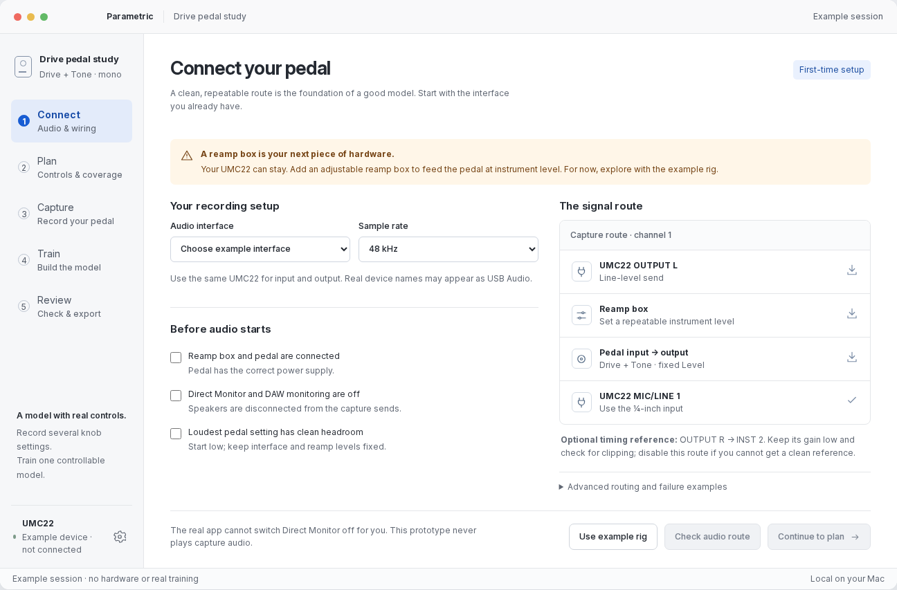
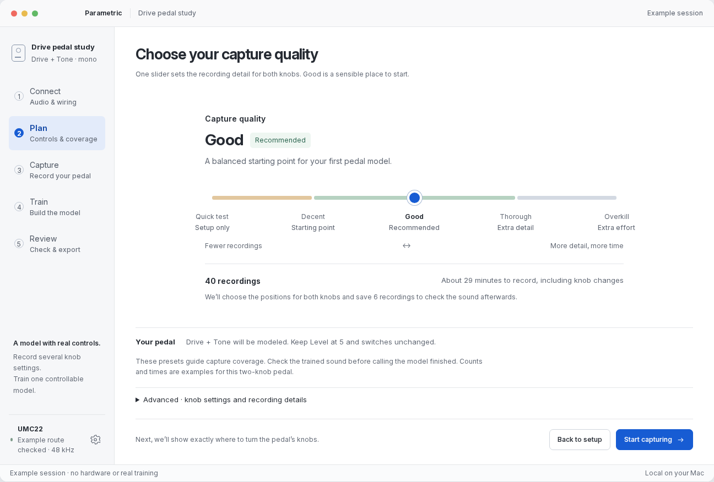
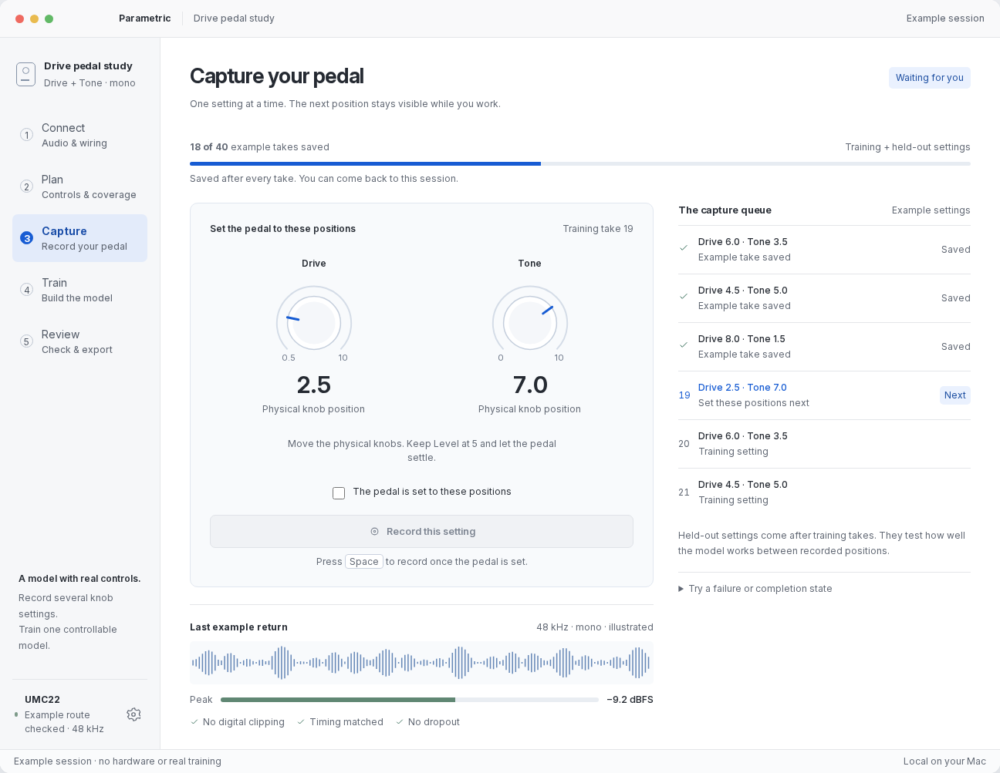
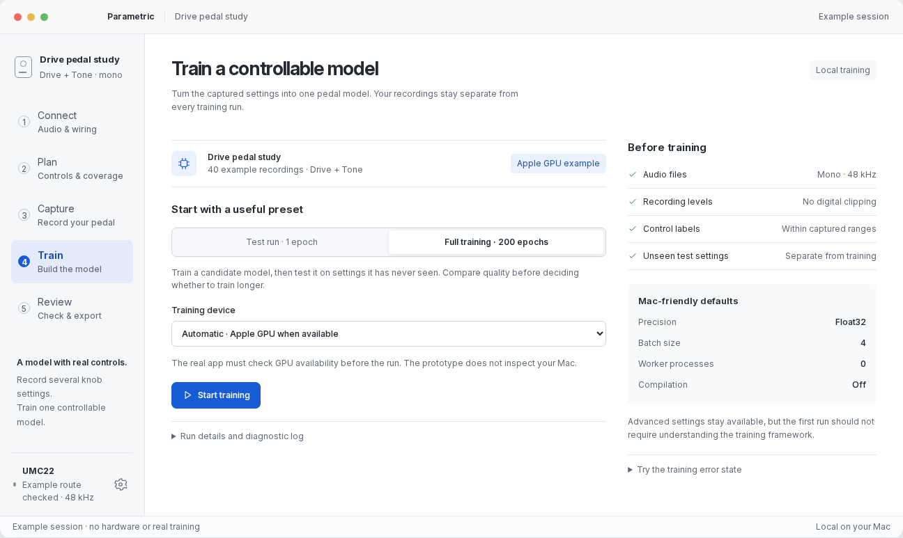
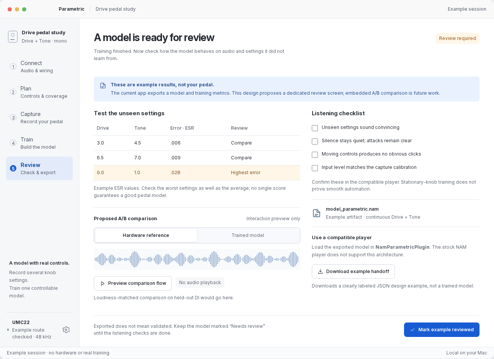

Five stages keep the next task obvious. Hardware checks come first, knob positions lead the recording screen, and training ends with a quality review—not just a file in a folder.

Connect · make the physical setup clear
The app starts with the gear you have. A reamp requirement, a labeled signal route, and three concrete checks lead to a route test. Permission and sample-rate failures explain what to change.
Try the setup and failure states →

Plan · one slider, a ready-to-use plan
Pick a capture quality from Quick test to Overkill. Good is already selected. One slider sets recording count, spacing for both knobs and sound-check recordings; estimated effort updates immediately.
Knob ranges and technical details stay under Advanced.

Capture · the main working view
Large physical knob targets are the center of attention. The user confirms the setting, records one take, then gets the next target. Saved progress and audio quality remain visible without a wall of logs.
A failed take keeps the same target. Cancelling preserves earlier takes. If gain calibration must change, the recovery path starts a new session instead of mixing incompatible captures.
Try recording a take
Train · choose a preset, follow real progress
Use a one-epoch setup test or a longer candidate-model run. Readiness checks explain why training is available. Progress and validation error lead; diagnostic logs sit behind disclosure.
Start a run or try GPU-memory recovery →

Review · exported is not yet validated
Unseen settings and the worst error are easy to find. A listening checklist and the compatible-player requirement make the final handoff concrete. The proposed A/B panel is future functionality.
The demo downloads a labeled handoff example, never a fake .nam.